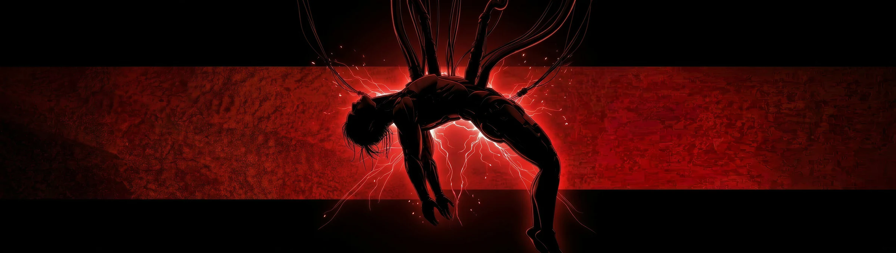

ABOUT THE ARTISTXDLOOPS / VJ
Sound in sight.
Ideas in motion.

ONER / OPENING VISUALS我是 XDLOOPS，
一名 VJ。
在声音与图像之间，
寻找属于现场的表达。
介绍文案草稿，可根据你的创作理念调整。
- 创作方向
- VJ / 现场视觉
- 创作职责
- AI 影像制作、动画制作
- 联系方式
- 待补充
HAVE A PROJECT IN MIND?合作 / 求职机会 / 创作交流
Let's make
something move.
让下一个想法，成为看得见的现场。
XDLOOPS / VJ联系方式待补充。提供邮箱或社交主页后，这里将显示正式联系入口。